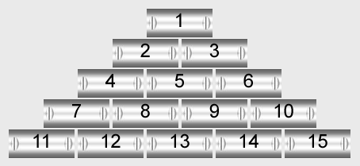

<div class="container py-3">
  <div class="row">
    <div class="col"></div>
    <div class="col-10 col-sm-10 col-md-10 col-lg-7">

      <ul class="nav nav-tabs">
        <li class="nav-item">
          <a href="#home" class="nav-link active" data-toggle="tab">Home</a>
        </li>
        <li class="nav-item">
          <a href="#rules" class="nav-link" data-toggle="tab">Regeln</a>
        </li>
      </ul>
      <br>

      <div class="tab-content">

        <div class="tab-pane text-center active fade in show" id="home">
          <h5>Badminton-Vereinsrangliste Rot-Weiss Walldorf</h5>
          
          <hr>
          <h5>Verwendete Technologien:</h5>
          <ol class="list-group">
            <li class="list-group-item">Angular</li>
            <li class="list-group-item">Google Firebase</li>
            <li class="list-group-item">HTML 5</li>
            <li class="list-group-item">Bootstrap 4</li>
          </ol>
        </div>

        <div class="tab-pane" id="rules">
          <p>Quelle: www.tv-badminton.de</p>
          <p>Das Ranglistensystem entspricht einem Tannenbaum und teilt die Ranglistenspieler/-innen in verschiedene Reihen
            ein. In der Reihe 1 steht die Nummer 1, in der Reihe 2 die Nummer 2 und 3, in der Reihe 3 die Nummer 4, 5 und
            6, in der Reihe 4 die Nummer 7, 8, 9 und 10, usw. siehe unten.</p>
          
          <br><br>
          <p>In der Reihe, in die man sich hineingespielt hat, darf man jeden Spieler fordern. Man hat aber auch das Recht,
            in der nächsthöheren Reihe diejenigen zu fordern, die rechts vor einem stehen. Zusätzlich hat der an Nummer 3
            gesetzte Spieler das Recht, den an Nummer 1 gesetzten Spieler herauszufordern. Befinden sich darunter neutralisierte
            Spieler, so kann man die unmittelbar davor stehenden Spieler fordern, soweit die Anzahl der Forderungsmöglichkeiten
            dadurch nicht erhöht wird, z. B. bei der Nummer 8 drei Möglichkeiten. Hat der Forderer den Herausgeforderten
            geschlagen, so nimmt er dessen Stelle ein und der Herausgeforderte rutscht eine Stelle zurück, wie auch die hinter
            ihm platzierten einen Rang zurückgestuft werden.</p>

          <p>
            Beispiel: Nummer 13 kann Nummer 12, 11, 10 und 9 herausfordern. Fordert er Nummer 9 heraus und gewinnt, dann wird er zur
            neuen Nummer 9. Die Spieler 9, 10, 11 und 12 rutschen jeweils um eine Position nach unten. Verliert der Herausforderer,
            dann ändert sich nichts.</p>
          <p>
            Noch nicht in die Rangliste eingereihte Spieler können sich an einer beliebigen Stelle in die Rangliste einfordern. Geht
            dieses Forderungsspiel verloren, hat der Spieler das Recht sich ab drei Plätze hinter dem erstmals geforderten
            wieder einzufordern. Geht auch dieses Spiel verloren, wird er am Ende der Rangliste eingestuft. Spieler, welche
            bereits früher in der Rangliste mitgespielt haben, müssen bei einer erneuten Teilnahme am Ende der Rangliste
            anfangen.
          </p>

          <p>
            Beispiel: Fordert ein neuer Spieler die Nummer 1 heraus und verliert, darf er im nächsten Spiel maximal den an Nummer 4 gesetzten
            Spieler herausfordern.
          </p>

          Folgendes Forderungsverfahren ist einzuhalten:
          <p>
            <s>a) Meldung der Forderung mit folgenden Daten an den Ranglistenverwalter: - Name des Forderers - Name des Geforderten
              - auszuspielender Ranglistenplatz - Datum des Forderungseintrages Wird das Spiel sofort ausgetragen, kann die
              Meldung entfallen. Mit der Meldung soll verhindert werden, dass ein Spieler gleichzeitig mehr als ein Spiel
              bestreiten muss.</s>
          </p>
          <p>b) Die Forderung ist innerhalb von 8 Tagen abzuwickeln.
          </p>
          <p>c) Wird das Spiel nicht sofort ausgetragen, dann einigt sich der Forderer mit dem Gegner auf einen Termin.
          </p>
          <p>d) Ist eine Einigung auf einen Termin innerhalb der nächsten 8 Tage nicht möglich, ist der Ranglistenverwalter
            zu benachrichtigen. Dieser entscheidet, ob die Forderung ungültig wird oder der Forderer als Sieger gilt. </p>
          <p>
            <s>e) Der Ausgang des Spieles ist unverzüglich dem Ranglistenverwalter zu melden, damit die Rangliste aktualisiert
              werden kann.</s>
          </p>
          <p>Fordert zum Beispiel ein Spieler einen anderen heraus, dann kann der Herausgeforderte eine sofortige Austragung
            des Spieles ablehnen, muß sich dann aber mit dem Herausforderer auf einen Spieltermin einigen, welcher maximal
            am gleichen Wochentag der Folgewoche liegt.
          </p>
          <p>
            Verliert ein Forderer sein Spiel, darf er frühestens in 3 Wochen wieder den gleichen Gegner fordern. </p>
          <p>
            Damit soll verhindert werden, dass ein Spieler immer wieder den gleichen Gegner herausfordert.
          </p>
          <p>Fordert ein Spieler einen anderen Spieler heraus oder ist ein Spieler selbst gefordert worden, dann darf er erst
            wieder gefordert werden oder selbst fordern, wenn das vorherige Spiel beendet ist und die Rangliste neu berechnet
            wurde. <br> Gewinnt ein Forderer sein Forderungsspiel, ändern sich die Positionen der Rangliste. Damit ist erst
            nach der Beendigung des Spieles feststellbar, wer die beiden Spieler fordern darf.</p>
          <p>
            Gespielt wird nach den Regeln des HBV (Rallyepoint-Zählweise). Es entscheidet der Gewinn von zwei Sätzen. Ein Satz geht bis
            21 Punkte (2 Punkte Vorsprung, maximal 30 Punkte), jeder Ballwechsel bringt einen Punkt.
          </p>
          <p>
            <s>
              Für die Spiele im Hobbybereich werden Plastikbälle verwendet, bei den Mannschaftsrangliste Federbälle. Bei gegenseitiger
              Einigung kann auch mit den jeweilig anderen Bällen gespielt werden.</s>
          </p>
          <p>
            Zweck der Neutralisierung ist es einerseits, dem Ranglistenspieler die Möglichkeit zu geben, z.B. während einer Reise oder
            Krankheit in der Rangliste zu bleiben, ohne durch Forderungsspiele, zu denen er nicht antreten kann, seine Position
            einzubüßen, andererseits ohne andere Spieler beim Vorwärtskommen in der Rangliste zu behindern. Er kann während
            dieser Zeit nicht fordern oder gefordert werden. Neutralisiert wird: a) Wer mehr als 7 Tage nicht anwesend ist
            und dies gemeldet hat, für die Dauer der Abwesenheit. Ist er bereits gefordert, gelten die Bestimmungen nach
            Ziffer 4 d). b) Wer voraussichtlich mehr als 7 Tage spielunfähig erkrankt ist, für die Dauer der Erkrankung.
            Bei mehr als 7-tägiger Krankheit wird eine bereits bestehende Forderung ungültig. Im übrigen gelten die Regeln
            nach Ziffer 4 d). Neutralisierte Spieler, welche am Training teilnehmen, können während dieses Trainings wieder
            entsprechend der Regeln gefordert werden. Danach sind sie automatisch wieder neutralisiert, falls der Grund der
            Neutralisation weiterhin besteht.
          </p>

        </div>

      </div>

    </div>
    <div class="col"></div>
  </div>
</div>
